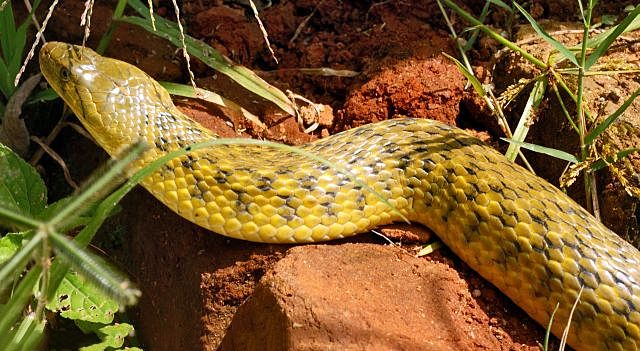

धारीदार पानी साँपCheckered Keelback
Xenochrophis piscator · Colubridae · REP-0009

- Scientific name
- Xenochrophis piscator Schneider, 1799
- Family
- Colubridae
- Hindi
- धारीदार पानी साँप
- Status here
- native
- IUCN
- LC
When to look कब देखें
Present all year.
धारीदार पानी साँप / Checkered Keelback
Xenochrophis piscator Schneider, 1799 — Colubridae
धारीदार पानी साँप (चेकर्ड कीलबैक) — उत्तर प्रदेश के मीठे पानी के तालाबों, नहरों, धान के खेतों और दलदली क्षेत्रों में पाया जाने वाला एक अत्यंत आम और सक्रिय देशी पानी का साँप है। यह पूरी तरह से गैर-विषैला (non-venomous) और मनुष्यों के लिए हानिरहित होता है, हालांकि अक्सर ग्रामीण लोग इसे विषैला समझकर मार देते हैं। इसके शरीर पर पीले-हरे या भूरे रंग की पृष्ठभूमि पर काले धब्बों का एक सुंदर शतरंज जैसा चौखाना पैटर्न (checkerboard pattern) बना होता है। यह दिन के समय पानी में बहुत तेजी से तैरकर मेढकों और छोटी मछलियों का शिकार करता है। खतरे के समय यह अपने शरीर को फुलाकर और गर्दन को थोड़ा चपटा करके कोबरा की तरह व्यवहार करने का नाटक (cobra-mimicry) करता है।
Quick Identification त्वरित पहचान
| Feature | Description |
|---|---|
| Size & Shape | Medium-sized, robust-bodied snake; total length typically 60–100 cm (can reach 120 cm); head is distinct from the neck with a pointed snout |
| Colour & Pattern | Yellowish-green, olive-grey, or pale brown body with 5 rows of black spots forming a checkerboard (checkered) pattern along the body |
| Head Markings | Distinct dark streaks radiating from the eyes (two black lines behind and below the eyes) and a distinct V-shape mark on the neck |
| Scales | Keeled dorsal scales (having a central ridge), giving the snake a rough, textured appearance |
| Eyes | Large eyes with round pupils, situated dorsolaterally for good underwater vision |
Field tip: Look for a non-venomous water snake with a bold black-and-yellow/olive checkerboard pattern and two black stripes below and behind the eyes. It is highly active in or near water and swims with a side-to-side undulating motion.
Morphology आकारिकी
Biometrics (typical measurements in the Gangetic plain):
| Measurement | Range |
|---|---|
| Snout-vent length (SVL) | 500–850 mm |
| Tail length | 150–250 mm |
| Weight | 200–600 g |
Body: Streamlined, moderately robust body with strongly keeled dorsal scales. Carapace-like scales are rough to the touch. The belly is glossy yellowish-white with narrow dark borders on the ventral scales.
Head: Distinctly elongated, flat head with a slightly pointed snout. Eyes are large and alert, with round pupils. Teeth are numerous, sharp, and backward-curved, adapted for holding slippery aquatic prey.
Vocalisations
Reptiles do not possess vocal chords for calling.
- Sound production: Can produce loud hissed breathing sounds (hisses) when threatened or captured, by forcefully expelling air from its lungs.
Behaviour & Ecology व्यवहार और पारिस्थितिकी
Xenochrophis piscator is a semi-aquatic snake, highly active during both day and night. It spends a major portion of its time basking on bank vegetation or swimming actively. When threatened, it is highly defensive; it flattens its neck slightly, inflates its body to appear larger, and strikes repeatedly. Though it looks alarming and mimics cobras, it is completely harmless and non-venomous.
Life Cycle / Phenology जीवन चक्र
- Breeding: Mating takes place between November and February (cool dry season).
- Reproduction: Oviparous. The female lays a large clutch of 20–80 white, soft-shelled eggs in cavities, bank holes, or rotting vegetation close to water.
- Incubation: Eggs hatch within 35–55 days, timed with the onset of the pre-monsoon rains.
- Lifespan: Typically lives 8–10 years in the wild.
Host Plants or Prey आहार
Primary food items:
- Amphibians: Feeds extensively on frogs, including Skipper Frog ([AMP-0003 Skipper Frog]) and Indian Bull Frog ([AMP-0002 Indian Bull Frog]), as well as their tadpoles.
- Fishes: Hunts small freshwater fish like Tengra ([FSH-0008 Striped Catfish]).
- Others: Occasional consumption of freshwater crabs and aquatic insects.
Predators / Natural Enemies शत्रु
- Birds: Wading birds (such as [BRD-0021 Asian Openbill], storks, and herons) and birds of prey like the Black Kite ([BRD-0011 Black Kite]).
- Reptiles: Bengal Monitors ([REP-0004 Bengal Monitor]).
- Humans: Frequently killed on sight due to confusion with venomous snakes.
Agricultural / Human Relevance कृषि प्रासंगिकता
Paddy Ecosystem Guardian. The Checkered Keelback is a key predator in agricultural ecosystems. By consuming large volumes of frogs, rodents, and insects in flooded rice fields, it helps regulate prey populations and maintains balance. It is completely non-venomous and harmless to humans, though it will bite defensively if stepped on or grabbed.
Expected Locally स्थानीय रूप से अपेक्षित
Not a field record. Written from published accounts for eastern Uttar Pradesh. No confirmed local sighting yet — if you have seen it, that is what the atlas needs.
अभी तक स्थानीय पुष्टि नहीं। यह विवरण प्रकाशित स्रोतों से है, किसी अवलोकन से नहीं।
Extremely common across Basti district, present in every pond (talab), canal, and waterlogged ditch. Frequently encountered by farmers during paddy weeding or harvesting in the monsoon. Locally known as Paniha or Dhariyar.
Distribution वितरण
Global range: South and Southeast Asia, including Pakistan, India, Nepal, Bangladesh, Sri Lanka, Myanmar, and China.
In India: Found throughout the country in plains and wetlands.
In Uttar Pradesh: Abundant state-wide in all river basins and agriculture zones.
In Basti district / eastern UP: Abundant in every waterbody and agricultural village.
Research Questions शोध प्रश्न
Anyone can investigate these | कोई भी इन प्रश्नों की जाँच कर सकता है
- How does the prey choice of Checkered Keelbacks change between the monsoon and dry winter seasons? — Record prey items from stomach contents or visual hunting observations in different months.
- What is the frequency of neck-flattening defensive displays in Checkered Keelbacks when encountered in water vs. land? — Document escape vs. defense behaviors in different environments.
- Can you observe the snake swimming and note whether its head stays above water or submersed? / क्या आप पानी के साँप को तैरते हुए देख सकते हैं और नोट कर सकते हैं कि उसका सिर पानी के ऊपर रहता है या नीचे? — Watch swimming snakes in local village ponds.
- Does the population density of Checkered Keelbacks correlate with the abundance of frogs in village ponds? — Map frog and snake counts across multiple waterbodies.
- How can public education programs reduce the illegal killing of Checkered Keelbacks in rural Basti? / ग्रामीण बस्ती में धारीदार पानी साँप की गैर-कानूनी हत्याओं को कम करने के लिए सार्वजनिक शिक्षा कार्यक्रम कैसे मदद कर सकते हैं? — Conduct pre- and post-awareness surveys in schools.
Similar Species मिलती-जुलती प्रजातियाँ
| Species | How to tell apart | हिंदी |
|---|---|---|
| [REP-0005 Indian Cobra] | Venomous and highly dangerous; possesses a true hood with a spectacle mark on the back; lacks checkerboard pattern | भारतीय कोबरा / नाग — विषैला, वास्तविक फन |
| [REP-0006 Common Krait] | Venomous and highly dangerous; dark steel-blue body with narrow white crossbands; hexagonal vertebral scales | करैत — विषैला, काले शरीर पर सफेद धारियां |
| [REP-0002 Indian Rat Snake] | Much larger (1.5–2.5 m); terrestrial; uniform olive-brown or yellowish body with black lip borders and black markings on tail | धामन — बहुत बड़ा आकार, जमीन पर रहना |
Field rule: Bold black-and-yellow checkerboard pattern on the body, two black streaks radiating from the eye, and a semi-aquatic habit identify the Checkered Keelback.
Taxonomy & Classification वर्गीकरण
Original description. Johann Gottlob Schneider described the species as Hydrus piscator in 1799 in his work Historiae Amphibiorum naturalis et literariae (Fasciculus primus, page 247). Type locality: East Indies. Günther later placed it in the genus Xenochrophis. The genus name Xenochrophis is derived from Greek, meaning "strange-colored snake," and piscator is Latin for "fisherman," referring to its fish-eating habit.
Subspecies. Monotypic.
Family and order placement. Placed in the order Squamata, family Colubridae.
Phylogenetic notes. Xenochrophis piscator is a member of the subfamily Natricinae (keelbacks). Recent molecular work sometimes places it in the genus Fowlea (as Fowlea piscator), but Xenochrophis piscator remains widely used in standard regional databases.
IUCN status rationale. Listed as Least Concern (LC). Widespread, extremely abundant, and highly adaptable to human-modified habitats like agricultural paddies.
Photo Gallery फोटो गैलरी
References संदर्भ
- Schneider, J.G. (1799). Historiae Amphibiorum naturalis et literariae fasciculus primus continens Ranas, Calamitas, Bufones, Salamandras et Hydros in genera et species descriptos notisque. Vol. 1. Jena: Frommann, p. 247. [original description as Hydrus piscator]
- Smith, M.A. (1943). The Fauna of British India, Ceylon and Burma, Including the Whole of the Indo-Chinese Sub-Region. Reptilia and Amphibia. Vol. 3. Serpentes. Taylor and Francis, London, pp. 293–296.
- Whitaker, R. & Captain, A. (2004). Snakes of India: The Field Guide. Draco Books, Chengelpet, pp. 210–213.
- Vogel, G. & David, P. (2006). On the taxonomy of the Xenochrophis piscator complex. Herpetozoa, 19(1/2), 65–72.
- World Snake Database (2024). Xenochrophis piscator. Version 2024.
- GBIF Occurrence Data — Xenochrophis piscator, Uttar Pradesh (2010–2025).
Source file: species/fauna/reptiles/checkered_keelback.md